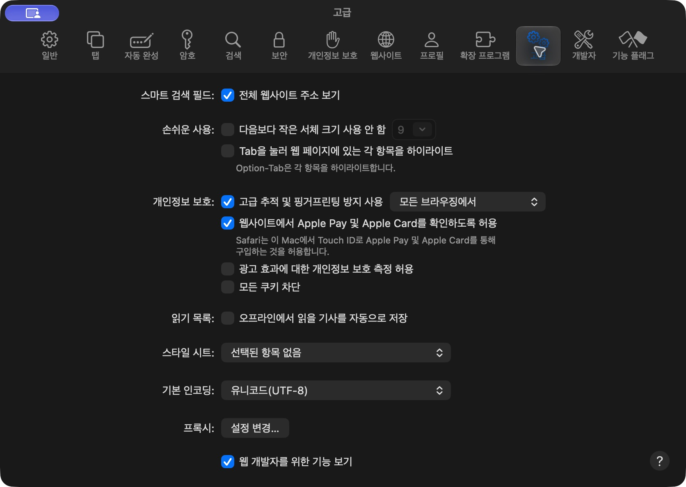
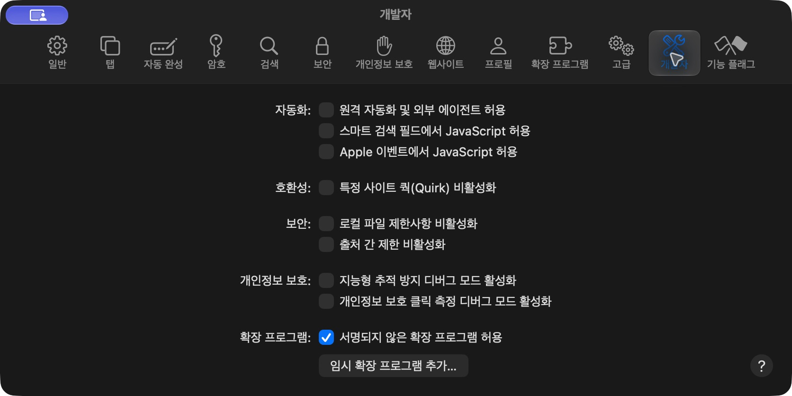

재생 조절
오프닝과 엔딩 자동 처리, 배속 컨트롤, 시청 확인 자동 응답. 엔딩을 끝까지 보는 선택도 가능합니다.
오프닝을 건너뛰고, 재생 속도를 조절합니다.
Netflix를 비롯한 여섯 서비스에서 사용하는
작은 Safari 확장 프로그램입니다.
Mac · 임시 확장 추가 기능이 있는 Safari 필요
무료 오픈소스 · 영구 설치 앱이 아닌 개발자용 베타

서비스별로 다른 기능을 알아보기 쉽게 모았습니다. 사용 가능한 조작은 각 서비스의 플레이어와 요금제에 따라 달라집니다.
오프닝과 엔딩 자동 처리, 배속 컨트롤, 시청 확인 자동 응답. 엔딩을 끝까지 보는 선택도 가능합니다.
작품 숨기기와 복원, 평점 표시, 서비스별 목록 필터. 숨긴 작품은 검색·정렬해서 관리합니다.
설정 검색, 밝고 어두운 화면, 일괄 설정과 백업. 원본 확장과 이전 Scene의 설정도 가져옵니다.

51개 서비스 설정 + 공통 조작 7개 + 배속·평점 설정 5개. 공통 조작 중 Firefox Android 전용 옵션 1개는 macOS 미적용입니다.
ZIP 파일을 Safari에 추가하는 방식입니다. 설치만 할 때는 Xcode나 Node.js가 필요하지 않습니다.
FlowSkip-Safari-0.4.3.zip 다운로드. 압축을 풀지 않고 선택할 수 있습니다. GitHub의 Code → Download ZIP은 소스 파일이므로 설치용 ZIP과 다릅니다.
아래쪽의 웹 개발자를 위한 기능 보기를 켭니다.

받은 Safari용 ZIP을 선택하세요. 서명 허용을 요구하면 신뢰하는 이 개발 빌드에 한해 서명되지 않은 확장 프로그램 허용을 선택합니다. 서명 검사를 완화하는 옵션이므로 출처를 모르는 확장은 추가하지 마세요.

FlowSkip — Safari 감상 도우미를 켭니다. 스트리밍 사이트를 열고 확장 버튼의 권한 안내에서 해당 사이트 접근을 허용하세요. 이용하는 서비스만 허용하면 됩니다.
스트리밍 탭을 새로고침(⌘R)하고 도구 막대의 FlowSkip을 누르세요. 서비스를 고른 뒤 빠른 설정을 바꾸거나 모든 기능 보기 ↗로 이동합니다.
왼쪽에서 서비스를 선택하고 필요한 스위치를 켭니다. 엔딩 건너뛰기와 끝까지 보기는 하나만 선택하세요. 일부 기능은 탭을 새로고침해야 적용됩니다.
등록한 고정 폴더의 파일을 갱신하고 Safari 설정 → 확장 프로그램 → FlowSkip → 다시 로드를 누른 뒤 스트리밍 탭을 새로고침하세요. 임시 설치의 유효기간 제한은 그대로입니다.
Netflix 광고에서 16배속을 우선 요청합니다. 마지막 2초는 원래 배속으로 재생하며 강제 음소거는 사용하지 않습니다. 허용되지 않으면 낮은 배속을 시도합니다. 서비스가 배속을 제한할 수 있으며 광고 완전 제거 기능은 아닙니다. 재생이 불안정하면 광고 기능을 끄세요.
‘숨긴 작품’에서 검색·필터·정렬과 개별/일괄 복원을 사용하세요. 복원 후 서비스 탭을 새로고침합니다. ‘설정과 백업’에서 업데이트 전에 JSON을 내보내세요.
원본 크롬 확장에 포함된 개발자 인증 값은 배포하지 않습니다. FlowSkip에서는 본인의 TMDB Read Access Token 또는 MyAnimeList Client ID를 연결해야 합니다. 연결하지 않아도 다른 감상 기능을 사용할 수 있습니다.
일반 TMDB API key가 아닌 Read Access Token을 사용하세요. 저장 표시는 인증 성공을 보증하지 않습니다.

임시 확장은 Safari 종료 또는 24시간 경과 후 제거됩니다. 같은 Safari용 ZIP을 다시 추가하세요. 중요한 설정은 미리 백업해 두세요. 영구 설치용 서명 앱은 아직 제공하지 않습니다.
소스 ZIP이 아닌 Safari용 ZIP을 개발자 설정에서 추가했는지 확인하세요. 사이트 접근 권한과 ‘FlowSkip 사용’ 스위치를 확인한 뒤 탭을 새로고침하세요. 임시 추가 메뉴가 없는 Safari는 이 설치 경로를 지원하지 않습니다.
기존 버전에서 백업 내보내기 → 이전 확장 끄기/제거 → 새 ZIP 추가 → 백업 가져오기 → 사이트 권한 허용 → 탭 새로고침 순서입니다. 여러 버전을 동시에 켜지 마세요. 인증 값과 프로필은 다시 설정해야 합니다.
광고 기능을 끄고 새로고침하세요. 현재는 베타로 모든 요금제와 플레이어에서 검증되지 않았습니다. 이슈에 Safari/macOS/FlowSkip 버전, 서비스와 재현 순서를 알려 주세요. API 토큰·쿠키·비밀번호는 첨부하지 마세요.
설정·프로필·통계·인증 값은 확장 로컬 저장소에 저장합니다. 별도의 FlowSkip 서버나 자체 분석 서비스는 없습니다. 평점과 포스터 기능 사용 시 TMDB/MAL에 제목이 전송됩니다. 개인정보 안내에서 자세히 확인할 수 있습니다.
0.4.3 베타 · 임시 설치용 ZIP
설치 전 안내와 제한 사항을 확인해 주세요.